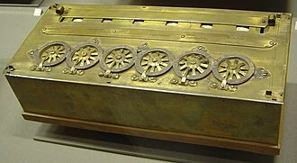
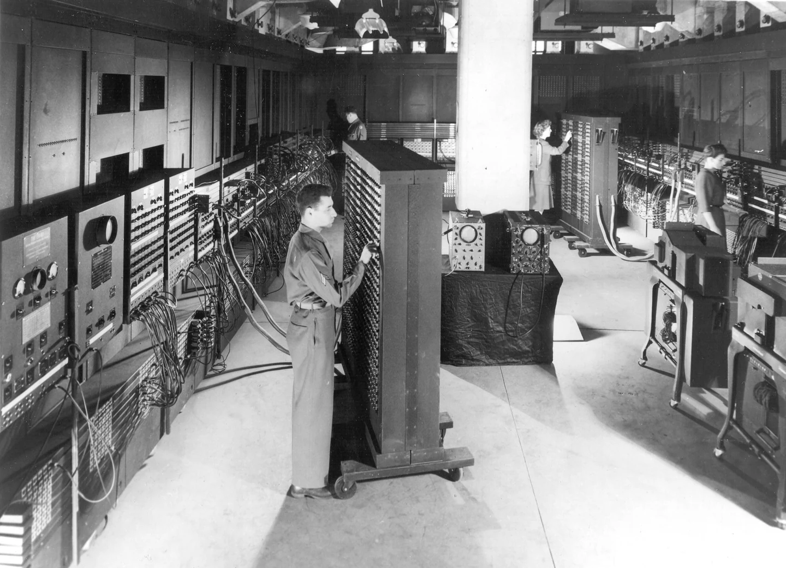
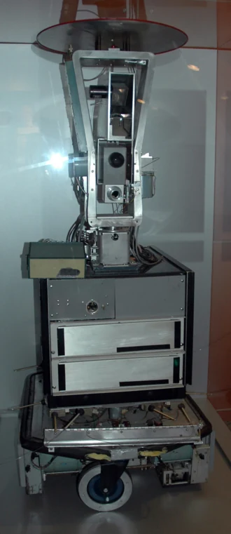
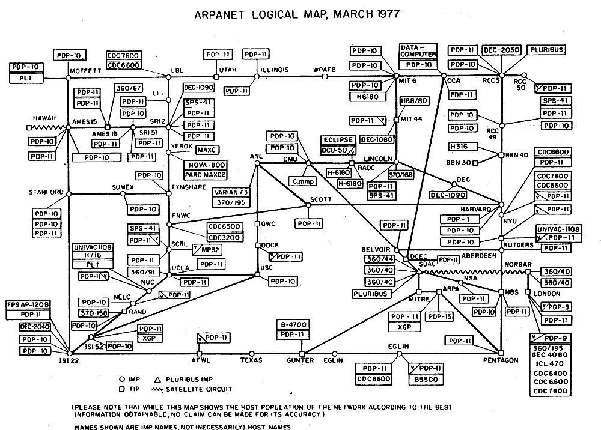
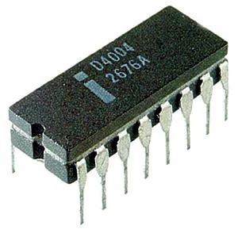
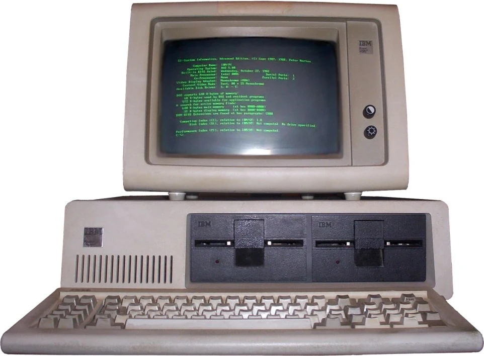
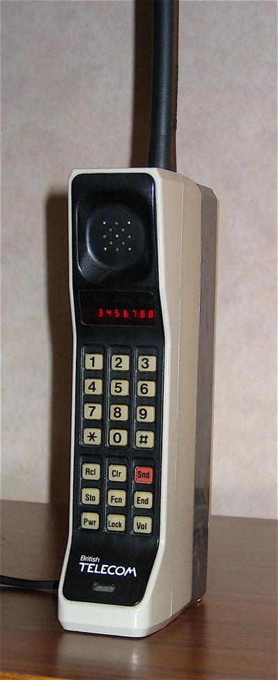
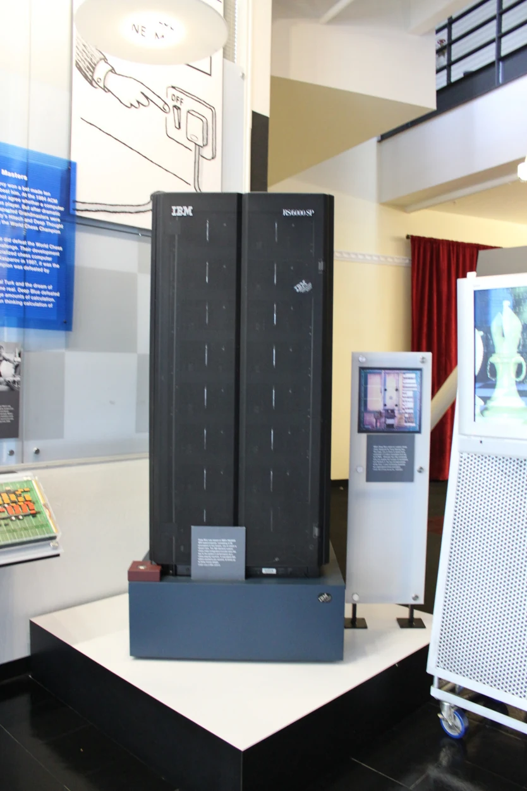

Paskāla kalkulators (1642)

Astoņi eksponāti rāda, kā mainījās skaitļošana un saziņa no Paskāla mehāniskā kalkulatora līdz datoram, kas uzvarēja pasaules čempionu šahā.
Apskatīt izstādi
Izstāde iepazīstina ar ierīcēm un sistēmām, kas ļāva paveikt agrāk grūti īstenojamus uzdevumus: automatizēt aprēķinus, savienot datorus tīklā, zvanīt bez vadu līnijas un plānot robota kustības.
Pie katra eksponāta norādīts nozīmīgs gads vai periods. Daļa fotogrāfiju uzņemta vēlāk muzejos. Vēstures avoti un attēlu licences atrodami lapas beigās.
Eksponāti sakārtoti pēc to izstrādes vai ieviešanas laika.







Izlasē tuvāk apskatāmas piecas ierīces un to darbības principi.